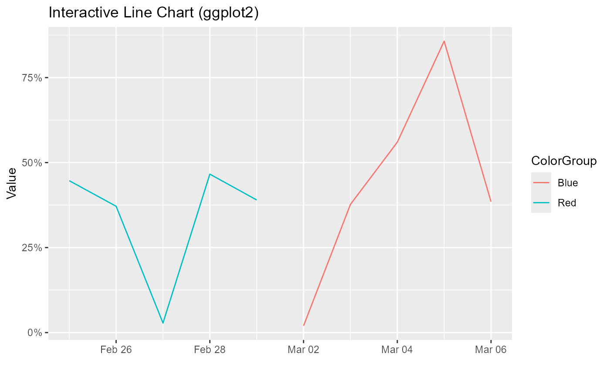

LineChartWrapper
LineChartWrapper.RdA wrapper function to create an interactive line chart using either ggplot2 or highcharter,
with customizable options for the x-axis, y-axis, color, grouping, and chart title.
Usage
LineChartWrapper(
df,
x_col,
y_col,
color_col,
group_col,
chart_title,
plot_engine = c("ggplot2", "highcharter"),
percent_y_axis = TRUE
)Arguments
- df
A data frame containing the data to be visualized.
- x_col
A string representing the column name in
dfto be used as the x-axis.- y_col
A string representing the column name in
dfto be used as the y-axis.- color_col
A string representing the column name in
dfto define the color of the lines.- group_col
A string representing the column name in
dfused to group the data into series.- chart_title
A string for the title of the chart.
- plot_engine
A string indicating the plotting engine to use. Can be either
"ggplot2"or"highcharter". Default is"ggplot2".
Value
A plotly object (if "ggplot2" is chosen) or a highchart object (if "highcharter" is chosen)
representing the interactive line chart.
Details
This function creates an interactive line chart with the following features:
Data grouped by the
group_colcolumn for separate line series.Line colors defined by the
color_colcolumn.A chart title and labeled axes.
A continuous y-axis scaled to display percentages.
Converts the
ggplot2object into an interactiveplotlychart or creates ahighcharterline chart.
Examples
library(ggplot2)
library(plotly)
data <- data.frame(
Date = seq.Date(from = Sys.Date() - 10, by = "day", length.out = 10),
Value = runif(10),
ColorGroup = rep(c("Red", "Blue"), each = 5),
Group = rep(c("A", "B"), each = 5)
)
chart_ggplot2 <- LineChartWrapper(
df = data,
x_col = "Date",
y_col = "Value",
color_col = "ColorGroup",
group_col = "Group",
chart_title = "Interactive Line Chart (ggplot2)",
plot_engine = "ggplot2"
)
chart_ggplot2

chart_highcharter <- LineChartWrapper(
df = data,
x_col = "Date",
y_col = "Value",
color_col = "ColorGroup",
group_col = "Group",
chart_title = "Interactive Line Chart (Highcharter)",
plot_engine = "highcharter"
)
chart_highcharter